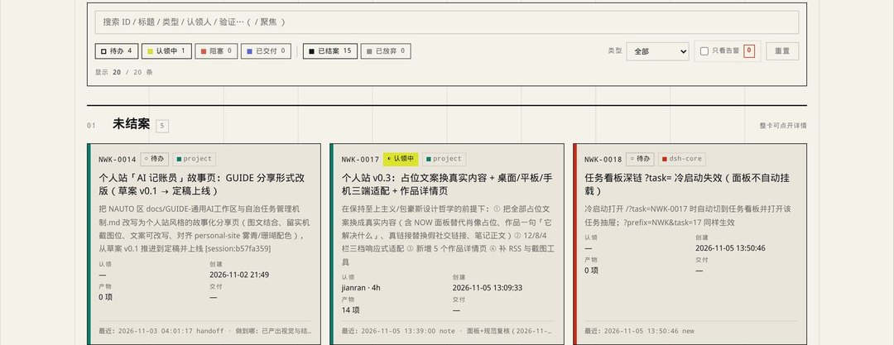

GUIDE Nº01两棵树 · 各一本账
35 个任务
3 个目录，各一本账
3 个工作区里躺着 35 个任务，杂事混在一起，连草稿也把目录搅乱了。这篇讲的就是我为此做的小东西：它长什么样、一件事怎么走完、它怎么自己转，以及它管不住什么。
- 天
- 42
- 工作区
- 3
- 任务
- 35
- 事件 · 本区
- 143
2026-11-05 18:33 快照 读完约 9 分钟
CH 00
为什么定规矩？
最怕的一件事
以前杂事和草稿都堆在同一层目录。整理的时候，我最怕把放临时东西的那一层全删了。
怕的是删掉放临时东西的那层目录。交付说明里只要有一句「详细日志见那个目录」，那条引用就跟着断了——文档看着完整，实际已经指不到东西。
这种引用断了不报错。没人点它，它就一直是「看着挺正常」的文档，直到有人真要用。
真正的毛病不在东西多。一件事留下的临时脚本，被另一件事当成成品引用，这种时候谁都不敢删。所以我做了个小东西，让我随时知道每件事走到哪一步、哪些能删。
CH 01
文件往哪儿放？
工作区劈两半
我怕再乱，就先定好东西都放哪儿。位置定死了，才谈得上后面怎么记账。
两棵树
文件乱，是把能带走的和只用一次的混在同一层了。分开后，成品那棵树不依赖另一棵，能整段复制带走；要删的那棵随时能整棵删——前提是没人从结果树里指过去，这区现在还挂着 4 条，所以我得靠检查盯着。
我把整个工作区一分为二。一边放能直接拿走的东西，包含 projects、docs、DELIVERY 和 SHARED_OUT；另一边是只用一次的 _proc 目录，专门按日期归档。
判据只有一条：哪怕我直接删空整个过程树，结果树里的文件引用也一条链都不许断。
不过眼下这个区里还挂着 4 条指向过程树的引用。
三个区共三本账，引擎是同一份脚本。
只追加的账本
分好位置后我还得把发生过的事记下来。我只往后写、不回头改，写错了补一行更正。好处是文件本身不会被覆盖；代价是编号靠读-改-写，两个人同时抢号会撞号，重放时按号去重会悄悄丢一行——我一个人用没撞过，多人得自己加锁。
我用纯文本做账本，每行记一条，只往文件末尾追加，绝不回头修改旧记录。里面也不直接存当前状态，全靠临时重新计算出来。
{"seq":14,"ts":"2026-10-31 12:49:24","type":"artifact","task":"NWK-0001","by":"jianran",
"path":"projects/dsh-status/server.py",
"sha256":"0f994a6cc53a1f3eae15120b6add87304a258b8b2aad31983d299c81a2ad05f8",
"note":"状态面板服务端"}
我当初没用数据库，是因为按约定得让人和 Agent 都能直接读取；一旦套上数据库，它就变成只有特定程序才看得懂的黑盒了。
CH 02
一件事怎么走？
一件事走五步
地方定好了，我接下来就得想，怎么随时知道每件事走到哪一步了——于是每个区有了一本账，和写账的五个动作。
5 行 人4 机1
↑ 视图格随时能删能重建，账本不能删
五步，一步一行
账本格式定好后，剩下的就是写几行、写点啥了。五步固定下来我就不用记流程；多数事会在账本里留下同样几条痕迹，事后能查是哪一步——也有人只写了建单和结案，中间没登。
之前写下的行一个字都不改。
- 0110-25 19:44newNWK-0001DSH 状态面板：独立 Web 页 + fnOS 桌面 …
- 0210-25 09:40newNWK-0002Jnas 旁路由部署（原生 sing-box / Doc…
- 0310-25 10:59newNWK-0003局域网双机 agent 互联（peer MCP / AC…
- 0410-17 18:18newNWK-0004个人站开发与文案交接（小七）
- 0509-24 19:23newNWK-0005Home Assistant 本地访问工具与令牌管理
- 0610-30 01:41newNWK-0006澎湃 OS 独立小部件开发调研
- 0710-30 01:46newNWK-0007DSH Web iPhone 移动端适配（设计→实现→复…
- 0809-25 11:23newNWK-0008NAS 实例蓝色鲸鱼图标品牌区分
- 0910-26 02:07newNWK-0009dsh-roleplay 局域网访问 403 修复补丁
- 1010-28 03:44newNWK-0010Ark plan-api 插件安装（profile we…
- 1110-26 02:19newNWK-0011dsh-roleplay 素材资产归整
- 1210-30 02:36newNWK-0012NAS 与主机 dsh 任务交接方案（互传/forage…
- 1310-27 17:24newNWK-0013查看 dsh 最新版与插件冲突 review
- 1410-31 12:49artifactNWK-0001状态面板服务端
- 1510-31 12:49artifactNWK-0001使用说明
- 1610-26 00:58doneNWK-00013081 面板可用；fpk 打包完成（见 deliver…
- 1710-31 12:49artifactNWK-0002旁路由一键脚本（三方案）
- 1810-28 21:52doneNWK-0002三方案部署指南见 旁路由部署指南.md
- 1910-31 12:49artifactNWK-0003peer 服务端
- 2010-31 12:49artifactNWK-0003MCP 桥
- 2110-25 19:45doneNWK-0003selftest.mjs 通过；list_peers 正…
- 2210-31 12:49artifactNWK-0004个人站主页
- 2310-24 21:59doneNWK-0004HANDOFF.md 交接完成
- 2410-31 12:49artifactNWK-0005HA 访问工具（令牌在 .secrets，不进账本）
- 2509-25 03:33doneNWK-0005ha ping 返回 HTTP 200；lights-o…
- 2610-31 12:49artifactNWK-0006资料汇编
- 2710-30 09:51doneNWK-0006开发规范/工具/账号指南资料齐全
- 2810-31 12:49artifactNWK-0007完整 spec
- 2910-31 12:49artifactNWK-0007设计 mockup
- 3010-31 02:54doneNWK-0007复盘见 dsh-iphone-retrospective…
- 3110-31 12:49artifactNWK-0008蓝色鲸鱼图标脚本
- 3210-25 14:13doneNWK-0008图标已改为蓝色区分
- 3310-31 12:49artifactNWK-0009403 修复补丁
- 3410-26 02:07doneNWK-0009局域网访问恢复正常
- 3510-31 12:49artifactNWK-0010安装记录
- 3610-28 03:46doneNWK-0010plan-api 插件安装成功
- 3710-31 12:49artifactNWK-0011素材资产目录
- 3810-26 03:11doneNWK-0011avatars/cards/images 归整完成
- 3910-30 02:49doneNWK-0012foragent 交接方案可行（互传目录）
- 4010-30 06:45doneNWK-0013冲突 review 完成，无阻断项
- 4110-31 12:49deliverNWK-0001v1.0.1 安装包（fnOS 手动安装用）
- 4210-31 12:49doneNWK-0001补充结案：fpk 已通过 deliver --share…
- 4311-02 10:07noteNWK-0004已部署：push 至 GitHub 公开仓库 junio…
- 4411-02 21:49newNWK-0014个人站「AI 记账员」故事页：GUIDE 分享形式改版（…
44 行是本区 143 条事件里的前 44 条；右侧四个数字全部由这些行走一遍算出来，不读任何存下来的状态。
- 10-25 19:44new建单
- 10-31 12:49artifact登记产物
- 10-31 12:49artifact登记产物
- 10-26 00:58done结案
- 10-31 12:49deliver交付
- 10-31 12:49done补充结案
09-24起42 天今天
看板是算出来的
账本是个流水账，我真正想看的是现在啥情况。面板每次打开都拿账本重放一遍，不是另存一份复印件；静态看板不一样，它是上次 rebuild 的快照，所以会过期——过期了重跑一遍就对了。
归属行只代表我自称已经记过了，巡检员根本不认这行。面板也不是存下来的，得把账本从头读一遍才算得出来。
截至 2026-11-05 18:33，这个区有 143 条事件，三个区合计 256 条。账本每天都在长，我写的是发布那一刻的数。
状态是算出来的，不是存的。算错了重跑一遍就对；要是存错了，你连从哪儿开始错都不知道。
同一份账本能出机器索引、Markdown、网页和单任务页。看板不是权威，账本才是。
静态看板不会自己重算，它是上次 rebuild 时的快照——所以它会过期。
CH 03
平时谁来维护？
日常自己运转
记一次不难，难的是天天记，人总会忘。所以我把这件活交给了机器。
一层包一层：约定在最里面，工具替人守约定，自动化替人做动作
04:00 巡检
账本要想好使，前提是得每天都有人记。要是我哪天忘了，凌晨它会自动帮我补记一次（最近一次退出码 0），我大白天只管看结果就行。
那轮有 4 个候选会话，新建或结案了 3 条任务，复扫 0 条。
真实那轮 · 11-05 04:042026-11-05 04:04:49
演示样本 · 不是真实统计不是真实统计
13 条演示 · 9 条被筛 → 4 条过筛
先让不花钱的脚本按游标挑出新会话，再让模型判断怎么记账。
心跳不进账本
定时任务要是每跑一次就往里写一行，我的账本早就被这些运行记录给淹了。现在运行状态只会覆盖一个小文件，哪个任务坏了我开工时一眼就能瞅见。
运行期间只写进一个心跳小文件，不进账本。
{
"job": "session-ledger-sync",
"last_run": "2026-11-05T04:04:49+08:00",
"exit_code": 0,
"duration_s": 0,
"consecutive_fail": 0,
"last_ok": "2026-11-05T04:04:49+08:00",
"log": "（过程树里当日目录下的 run 日志）",
"note": "（本次研判摘要）"
}
面板里 log / note 的值用说明文字代替，原值是过程树里的日志路径与本次研判摘要。
状态与计数键交机器判报警，时间与摘要人扫一眼；偶发报错常有，盯连续失败比单次退出码管用。
CH 04
它管不住什么？
盲区与局限
机器也会挂，定好的规矩也会破。最后我给自己留了两样：一个自动检查，一份「它管不了什么」的清单。

六条静态检查
规矩这东西写下来容易，守不住也挺容易的。所以我干脆让命令自己去检查。
我设了六条静态检查：根目录白名单、结果树禁引过程树、契约必填字段、产物存在性、脚本硬编码路径、账本禁指过程树。
| 检查 | 查什么 | 结果 |
|---|---|---|
| C1 | 根目录白名单：只准放定好的那几样 | 过 |
| C2 | 结果树的文档不许指向过程树的具体文件 | 4 条指向过程树 |
| C3 | 工程与作业的契约必填字段 | 过 |
| C4 | 声明过的产物真的存在；取件口没有半截文件 | 过 |
| C5 | 脚本没写死工作区绝对路径 | 31 条探针 |
| C6 | 账本里的产物登记不许指向过程树 | 过 |
跑 tb doctor 是 0 错误 / 35 警告：其中 4 条指向过程树的引用、31 条探针硬编码。探针只用一次，我留着这 31 条不修。
⚠ [C2] docs/gemini-web-api-review.md 引用了过程树目录 …（C2 同类共 4 条） ⚠ [C5] 过程树脚本写死绝对工作区路径：…/chaos-probe.mjs …（C5 同类共 31 条） （共 35 项：0 错误 / 35 警告）
六条检查分头盯路径、字段与产物；抓到过引用问题的那几条算真教训，剩下几条先立着，眼下还没响过。
五条边界
- 01静态检查治不了语义：分类错了、目标写空了，它不响。
- 02我独自干一次性的小活，用这套不划算。
- 03两棵树之外不能留第三处，多一处就开始漏。
- 04它不替我做判断，只让记录不撒谎。
- 05活少到一个人一个目录就能看清时，我就撤掉这套东西。
这份是通用指导文件，不含我这边的路径和任务号，拿去改改就能用。
下载 .md